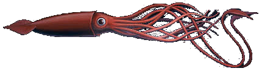

Óriás tintahal (Architeuthis dux)
Az óriás tintahal (Architeuthis dux) a világ egyik legnagyobb fejétlábúja, és a tintahalak családjába tartozik. Testének hossza akár 13 méterre is megnőhet, és a becslések szerint a legnagyobb példányok akár 250 kg-ra is gyarapodhatnak. Az óriás tintahal rendkívül nehezen tanulmányozható, mivel mélyebb vizekben él, és ritkán kerül a felszínre. A faj jellegzetességei közé tartozik a hosszú, karcsú test, a nagy szemek és a nyolc kar, amelyek közül két kar sokkal hosszabb, mint a többi. Táplálékát főként kisebb halak és más tengeri élőlények képezik, amelyeket az erős csápjaival ragad meg. Az óriás tintahal híres a biolumineszcenciájáról, vagyis a saját fénykibocsátásáról, amely segíthet a kommunikációban és a zsákmány vonzásában. A faj vadászata és a mélyvizes környezetében való életmódja miatt a kutatók nem sokat tudnak róla, de gyakoriak a tengeri mélységekben rögzített videók és fotók. Az óriás tintahalra számos tengeri ragadozó vadászik, köztük a kardszárnyú delfin és a különféle cápák. Mivel a faj rendkívül ritka, és a tenger mélyebb rétegeiben él, a tudományos közösség még mindig sok ismeretlen aspektust vizsgál. Az óriás tintahal titokzatos életmódja és hatalmas mérete miatt fontos szereplője a tengeri ökoszisztémák kutatásának.

Manta rája (Manta birostris)
A manta rája (Manta birostris) a legnagyobb élő rájafaj, amely akár 7 méter szélesre is megnőhet. A testét jellegzetes, háromszögletű szárnyak formájában bővül ki, amelyek segítik a vízben való gyors és könnyed mozgást. A manta rája általában meleg, trópusi és szubtrópusi vizekben él, és gyakran található korallzátonyok, tengeri áramlatok és mélyebb vizek közelében. A faj táplálkozása planktonokra, kisebb halakra és rákfélékre összpontosít, amelyeket a szájába szűr a víz áramlása során. A manta rája a világ egyik legintelligensebb halai közé tartozik, és rendkívül szociális, gyakran csoportokban él. A szaporodásuk ovovivipár, azaz a tojások belül fejlődnek, és az utódok élve születnek. A manta rája nem veszélyes az emberre, és inkább a nyugodt mozgásairól ismert, mintsem agressziójáról. A faj számos fenyegetéssel küzd, mint a túlhalászás, a tengeri élőhelyek pusztulása és a vízszennyezés, ami miatt egyes területeken védett állatnak számít. A manta rája populációja az utóbbi évtizedekben csökkent, és több nemzetközi egyezmény is próbálja biztosítani védelmét. Mivel rendkívül lenyűgöző látványt nyújt a búvároknak és a vízi sportolóknak, az óceánokban való megfigyelésének népszerűsége is nőtt, ami hozzájárult a faj védelmére irányuló erőfeszítésekhez.